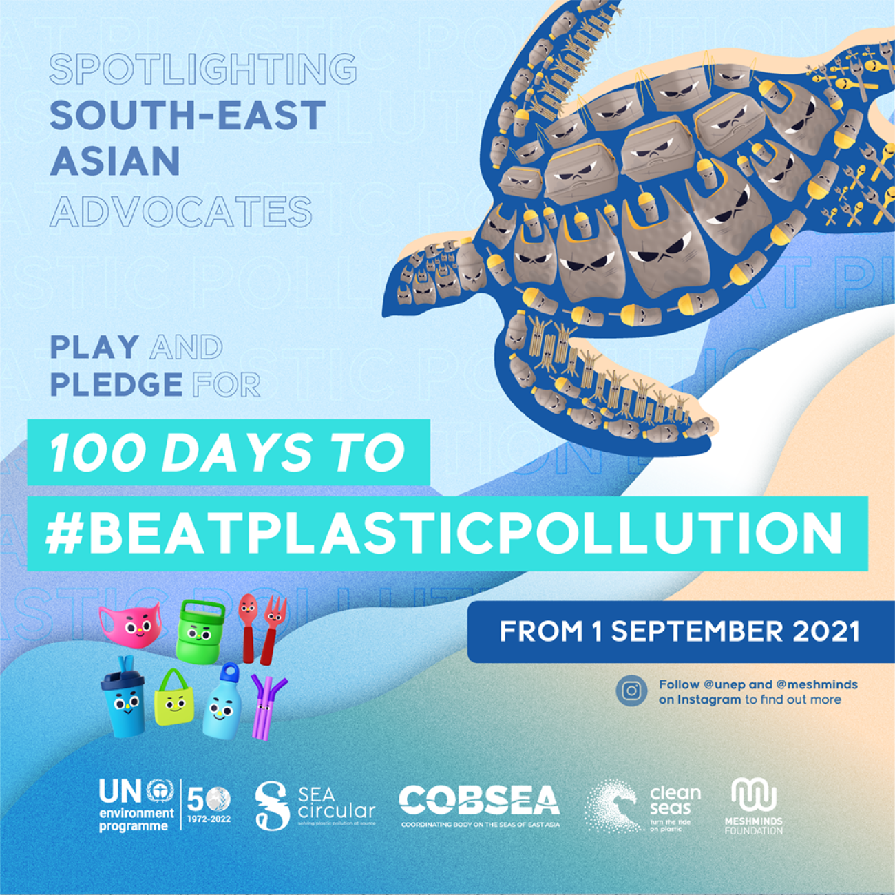

Pengertian
Kerjasama regional adalah kerjasama antara negara-negara di kawasan yang melibatkan lebih dari 2 negara dan dilakukan oleh negara-negara yang berdekatan di suatu kawasan tertentu.
Tujuan dan Manfaat
- Memperkuat hubungan ekonomi dan perdagangan antarnegara anggota melalui pembentukan kawasan perdagangan bebas atau pasar bersama.
- Meningkatkan daya saing ekonomi negara-negara anggota di pasar global melalui integrasi ekonomi regional.
- Mempromosikan stabilitas politik dan keamanan di kawasan melalui kerja sama di bidang politik dan pertahanan.
- Memfasilitasi kerja sama di bidang sosial, budaya, pendidikan, dan pariwisata untuk meningkatkan pemahaman dan toleransi antarnegara anggota.
- Mengatasi permasalahan lintas batas seperti kejahatan transnasional, bencana alam, dan isu lingkungan hidup melalui kerjasama regional yang terkoordinasi.
Hubungan dengan SDGs 14

UNEP Regional Seas Programme
UNEP Regional Seas Programme adalah inisiatif kerjasama internasional yang bertujuan melindungi dan mengelola laut serta wilayah pesisir melalui pendekatan regional. Program ini melibatkan kelompok negara yang berbagi badan air laut, dengan kesepakatan hukum dan rencana aksi bersama untuk mengurangi polusi, melestarikan keanekaragaman hayati, dan menjaga ekosistem laut. Melalui koordinasi lintas negara, program ini mendorong pengelolaan sumber daya laut yang berkelanjutan, konservasi habitat pesisir, dan tindakan kolektif terhadap masalah lingkungan yang bersifat transnasional.